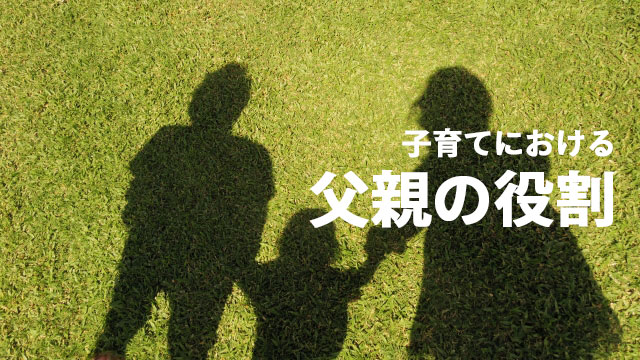

少し前からの傾向として子育てに積極的に関わる父親が増えています。
塾の保護者会などでも父親の参加率が20～30年前に比べて格段に増えた気がします。
以前なら子育ての主役は母親とだいたい相場が決まっているものでしたが、今は違います。
かつて父親は企業戦士として外で忙しく動き、家庭は専業主婦たる母親が子育てを含め「銃後の守り」を固めるという役割分担が明確でした。
しかし15～16年前からポツポツ父親の参加が目立ち始め、この10年くらいは父親が出てくることは珍しいことではなくなりました。
父母そろっての参加もごく普通の光景になりました。
この背景には、女性の社会進出や主婦のパートタイム労働の増加による専業主婦の消失、経済成長の鈍化による労働時間の短縮、残業カットやリストラの増加、終身雇用神話の崩壊などによって、男性もかつての会社人間から脱皮し家庭への回帰が起こっていることなどがあるでしょう。
高度成長期を支えた産業社会の構造が変化し、もはや「父親が仕事で稼いで」「母親が家庭を守る」という固定的な役割分担が消えつつあり、共働きの家庭が増えている中で、男女の役割も不明朗にならざるを得ない。
「子育ては父」「仕事はもっぱら母」という逆転した家庭さえ登場しているのです。
これが父親が子育てに参加し始めたバックグラウンドだといえます。
私の個人的意見を言うと父親が子育てに積極的に関わることはとても良い傾向だと感じています。
子どもの健全な成育には、やはり母親だけでなく父親の存在感や協力が欠かせないからです。
私の元に子どものことで相談に訪れる際にも夫婦揃って来られる方が最近多く、これはカウンセリングの効果という面でも良いことです。
何よりも子どものことで夫婦が話し合う姿勢そのものが子どもに良い影響をもたらすからです。たとえ問題が深刻であっても夫婦で悩み解決していくことが大事です。
さてその上で、今回はあえて父親が子育てに関わる場合の注意事項というか、望ましくない対応について話したいと思います。
父親は細かいことに口出しするな
一般的にいえば母親の方が子どもの変化に敏感です。子どもの気持ちや感情さらに体調面などを母親は瞬時に正確に感じ取ることが得意です。これはもちろん母親の方が子どもと接する時間が長いからですが、それだけではなく細かい観察能力が父親に比べて数段すぐれているからです。
だから子どもの日々の細かな生活態度に関しては、基本的に母親を信じて任せた方がよいし、父親はあえて口出しを我慢した方が良いのです。
しかし父親の中には母親並みに細かいことに口出しし過ぎる人がいます。
「子育てに関わること」イコールうるさく介入することだと思い込んでいるのかも知れません。
「細かいことに口出しする」というのは母親のように子どもの気持ちに関することではなく、もっと技術的というか物理的なことです。
たとえばよく経験するのは、子どもの勉強などをみて「何だ、こんな問題も解けないのか！」と子どもを追求する父親です。
このタイプは、昔数学が得意だったとか技術系の職にいる人に多く「この数学の解き方はこうだろう」と効率のよい解き方を一方的に押し付けたりします。あげく「塾ではこの解き方を教えないのか！」などと苦情を言ってきたりするのです。
細かいことに口出しする父親は、このように勉強だけでなく、自分の仕事に関することなど特定の分野（こだわりの部分）に突出しているのが特徴で、中には金銭の使いみちなどに異常にうるさかったりします。
それは父親の価値観➖それも極めて狭い範囲でのこだわり➖の押し付けでしかありません。
要するに子どものためにはなっていないということです。
細かすぎる父親の存在は、子どもにしてみたら家庭内にいわば母親が二人いるようなものです。子どもにとってこれはとても窮屈なことではないでしょうか。
子どもを型にはめる父親
次に望ましくない父親のタイプを挙げるなら「社会性過剰」な人ということになります。
社会性過剰というのは聞き慣れない言葉ですが、要するに「こんなことでは社会に出てから困るぞ」と子どもに言うタイプの父親です。
直接このような表現を使うかどうかは別にして、子どもの行状を「社会人として通用するか」「社会で有用な人間になれるか否か」を基準に判定するタイプということです。
これは良く言えば子どもの将来を気にかけているからですが、悪くいうなら子どもを過度に「社会という鋳型」にはめこもうとしている点で子どもの個性や願いを二の次に考えているということです。
会社内での序列や社会的地位の高い人に多いのが特徴です。
もちろん子どもがあまりにダラシなく成績も下がる一方だとか、無軌道で他者に迷惑をかける行動を取る場合は叱ったり時には罰を与えることはむしろ父親として当然の対応です。
しかしそれは「しつけ」レベルの話であって必要最小限に止めるべきです。
それ以上は子どもに対するコントロールであり、「自分の人生観」の押し付けになります。
つまり単なるお説教ということです。
社会性過剰タイプの人が気をつけるべきは、社会的有用性という概念（フィルター）で子どもを見ないことです。
会社で部下を扱うように子どもに接してはいけません。
家庭は会社ではないのです。
子どもの自発性を損なわないためにも、ここは注意して欲しいと思います。
父の役割とは良い家庭づくり
以上、望ましくない父親のあり方について話してきました。
身に覚えのある人は気をつけていただきたいと思います。
以下、望ましい父親のあり方、その原則について話します。
私は、父親とは余計な口出しをせず子どもと母親を背後から見守る存在であると思っています。
それが父親としてまず基本的なスタンス（立ち位置）だと思います。
「見守る」とは子どもの行状に細かく介入したり「社会で通用する人間とは……」などと大上段にお説教を垂れるのではなく、日常のことは母親に任せながらも要点は押さえ、イザというときには「いつでも頼れる存在」として登場する用意を怠らないこと。
そのためには母親（妻）と常にコミュニケーションを取り、子どもの様子を大まかに把握しておくことが大事です。子どもに何か直接的に言うのではなく、むしろ母親をサポートする姿勢こそが必要だということです。
なぜなら母親はどうしても子どもの感情や置かれている状況と同化しやすく視野が狭くなりがちだからです。父親の理解なしでは孤独感（閉塞感）を持ちやすいからです。
父親がよく話を聞くことによって母親の不安や心配は軽減され、独りで背負う重荷からも解放されるからです。
その上で普段は、妻から子どもに関する情報を仕入れ子どもの「現状」を把握するよう努めなければなりません。
健全な子育てのためには母親の精神的安定と情報の共有が何よりも大切だからです。そして母親の安定のためには父親とのコミュニケーションが欠かせない。夫婦間のコミュニケーションが取れていればいるほど、家庭内が安定し自然と子どもも健全に育つのです。
だから父親の果たすべき大切な役割とは、夫婦間の意思疎通を図り母親に協力することを通じて家庭全体を安定させることにあると言えます。
これが基本的な原則。
これが前提にあってはじめて父親の子育て参加は効果あるものとなるわけです。夫婦の気持ちが通い合っていなかったり家族の思いがバラバラであったりするならいくら父親が子育てに熱心であってもそれは空回りするだけです。
結局父親の「子育て参加」とは子どもに直接アレコレ指図することではなく、家庭全体を支え幸せに導くプロセスの一つだということになります。